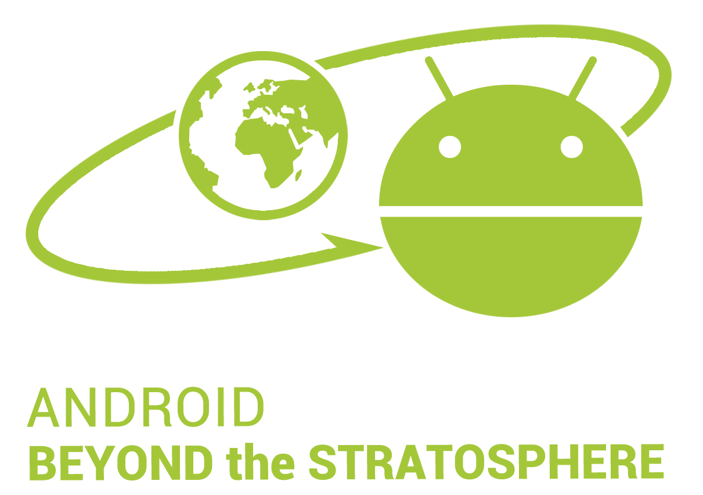

About the Project
The aim of this project is to explore the satellite-on-a-phone architecture to enable a low cost
modular pico-satellite with high reproducibility and fast development cycles towards the
democratization of space. This project has three different contributions, namely: 1) the
development of a Android Real Time OS (ARTOS) that will enable the execution of real-time
android applications on top of the Linux Kernel; 2) the design and implementation of the
hardware modules to turn the android-phone into an android-based pico-satellite, called the
Open-Source Nano-Satellite Platform and 3) the launch of the satellite and creation of the first
Open Space Station, which will give access to the phone-on-a-sat telemetry data to anyone with
a WiFi booster and a directional antenna.
This project has been sponsored by a Google Faculty Research Award, Summer 2013.
Android Real-Time OS (ARTOS)
The first step towards the Android Real-Time OS is to migrate from Android OS to an OS capable
of providing Real-Time capabilities. To do this, we use Preempt-RT
and integrate them with the Linux kernel inside the Android device. Once the ARTOS is achieved, the software that interfaces between the on board computer
(android phone) and the rest of the satellite subsystems (ADCS, Earth Communication, EPS),
which is in charge of the data-handling and telemetry from/to the Ground Station will be
developed on top of the ARTOS. The Android Real-Time OS is expected to be an Android OS with
real-time functionalities and an easy interface to access the satellite subsystems.
One of the objectives of the Open-Access Space Station is to allow developers and users create
their own applications and test them on the Stratospheric Android. Towards this objective, the
second stage of the ARTOS is to develop a Software Development Toolkit (SDK) that will enable
android developers access the different satellite payloads and subsystems in an easy way,
pursuing two purposes: first, it will allow a quick integration of the different in-home developed
payloads to be run on the stratospheric android; second, it will provide the basis for in-space
application testing. Although the possibility to let developers and users run their own applications
on the satellite is constrained usually due to the lack of energy and computation capabilities of
the satellites, the team has developed (as part of the MCATS) a Prolog-Based Constrain-
Scheduler that can successfully schedule different tasks and applications to be run in such a
resource-limited scenario.
Open-Source Nano-Satellite Platform
New hardware-dependent modules will need to be developed, namely:
- Attitude control System: an attitude determination and control system (ADCS) will be designed using phone's already present gyroscopes and magnetometer, based on the previous attitude control systems developed for Cat-1 and Cat-3. The attitude control system will use both passive (passive magnets and magnetic hysteresis rods) and active (actuator coil).
- Earth Communication System: patch antennas and new amplifiers will be added to the phone in order to communicate with WiFi (30-33dBm).
- Power Extraction Mechanisms: solar cells will be added using a non-deployable structure to the phone.
These hardware modules will be made publicly available as open-source hardware together with design specifications and required interfaces and software.
In order to use the Stratospheric Android Architecture as a low-cost, highly-configurable, fast-
development platform for pico-satellites, it is necessary to explore new ways to add payloads to
the phone and to connect new hardware modules. To do this, the possibility to connect other
payloads through USB will be explored together with the software modules required to achieve
this purpose. In this stage, the Arduino Uno board (open-source hardware compatible with
Android USB host) will be used to develop several payload demonstrators. Similarly to the first
stage, the hardware and software developed as payload demonstrators and to connect these
payloads to the stratospheric android will be open-source
Open Space Station
The first stage of the Open Space Station is educational: the main purpose is to enable anyone
with a WiFi antenna connect to the satellite and receive its telemetry data. Also, the telemetry
data of the satellite will be made available on a website and accessible to any user. Towards this
objective, a website will be published with: 1) Current status of the project, 2) Real-Time Data
received by the satellite-on-a-phone, 3) Tutorial and Open-Design Hardware on how to build your
own WiFi antenna to connect to the satellite, together with the required interfaces and software
to connect it to a computer.
Development of an Application Programming Interface (API) that allows sending commands to
the Open Space Station either to receive a specific set of data or activate different
payloads/applications already present on the Open-Access Space Station.